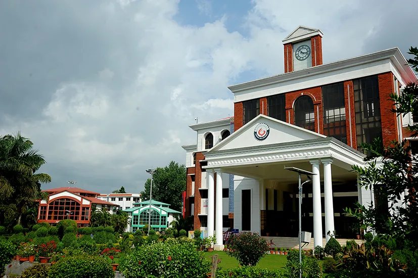
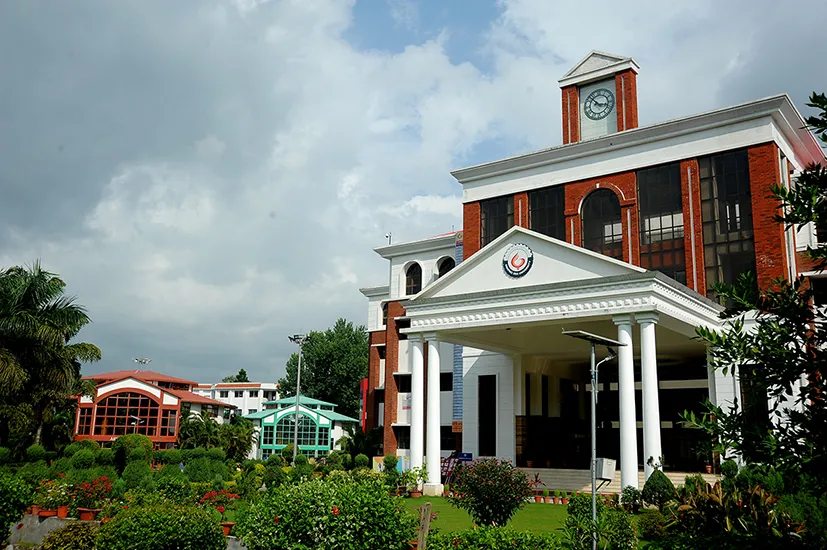

Dehradun is located in the Doon Valley on the foothills of the Himalayas nestled between Song river, a tributary of Ganga on the east and the Asan river, a tributary of Yamuna on the west. The city is noted for its picturesque landscape and slightly milder climate and provides a gateway to the surrounding region. Dehradun is a notable academic and research hub and is home to the Indian Military Academy, Forest Research Institute, Indira Gandhi National Forest Academy, The Doon School, Welham Boys School, Welham Girls School, Brightlands School, Rashtriya Indian Military College, Uttarakhand Ayurveda University, Wadia Institute of Himalayan Geology and the Indian Institute of Remote Sensing. It is the headquarters of the Surveyor-General of India. According to the combined survey based on health, infrastructure, economy, education, and crime, conducted by Dainik Jagran and KPMG, Dehradun is one of India's safest cities.[16][17] Dehradun is also known for its Basmati rice and bakery products. Also known as the 'Abode of Drona', Dehradun has been an important center for Garhwal rulers and was captured by the British. For its strategic value, in addition to the location of its principal service academy, the Indian Armed Forces maintain a considerable presence in Dehradun, at the Garhi Cantonment and Naval Station. The Uttarakhand Police is the primary law enforcement agency in the city..
 

About Us
The history of the city of Uttarakhand, Dehradun (nicknamed "Doon Valley")
is linked to the story of Ramayana and Mahabharata. It is believed that after the battle between Ravana and Lord
Rama, Lord Rama and his brother Lakshmana visited this site. Also, known as 'Dronanagari' on the name of
Dronacharya, legendary Royal guru to the Kauravas and Pandavas in the epic Mahabharata, is believed to have been
born and resided in Dehradun.[29] Evidences such as ancient temples and idols have been found in the areas
surrounding Dehradun which have been linked to the mythology of Ramayana and Mahabharata. These relics and ruins
are believed to be around 2000 years old. Furthermore, the location, the local traditions and the literature
reflect this region's links with the events of Mahabharata and Ramayana. Even after the battle of Mahabharata,
the Pandavas had an influence on this region as the rulers of Hastinapura with the descendants of Subahu ruled
the region as subsidiaries. Likewise, Rishikesh is mentioned in the pages of history when Lord Vishnu answered
the prayers of the saints, slaughtered the demons and handed the land to the saints. The adjoining place called
Chakrata has its historical impression during the time of Mahabharata.